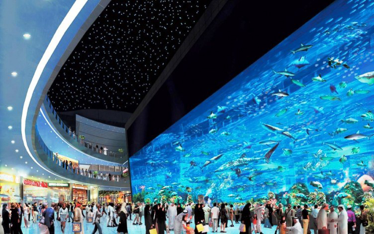
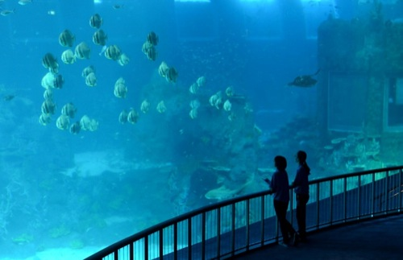
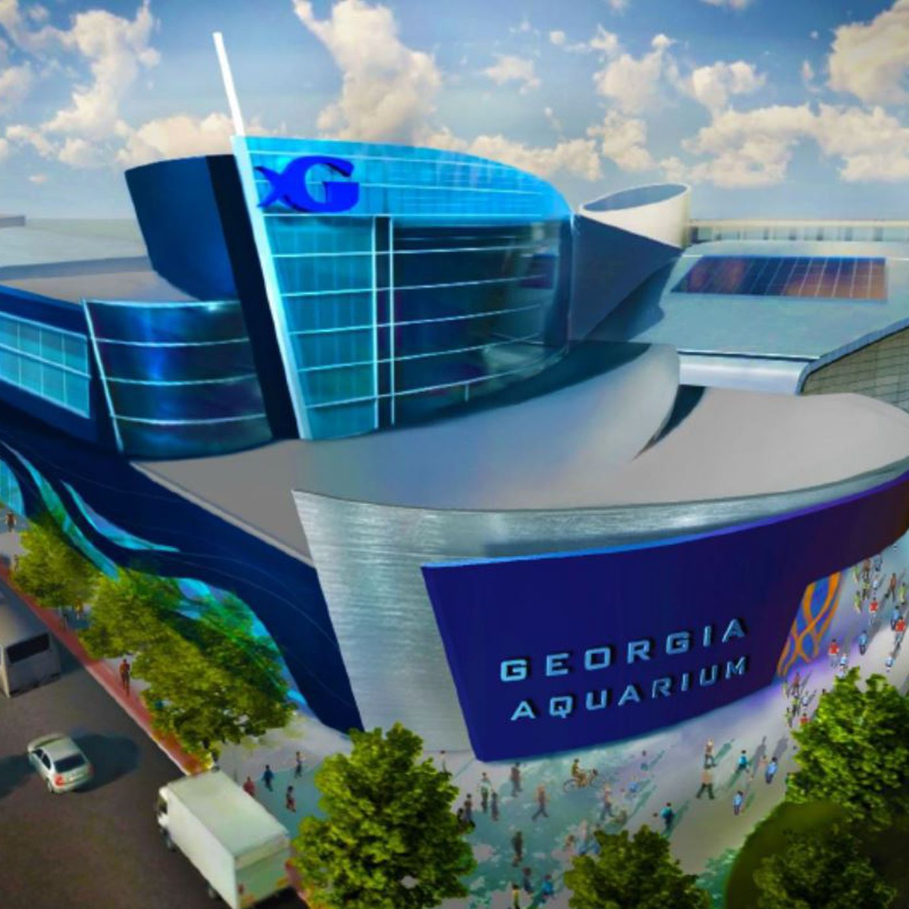
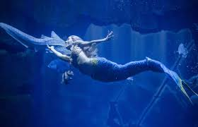

Un acuario público o aquarium es una instalación abierta al público cuyo interior aloja especies acuáticas en peceras o acuarios. La mayor parte de los acuarios públicos presentan una determinada cantidad de tanques de poca capacidad, así como uno o más depósitos mayores. Los depósitos más grandes tienen una capacidad de varios millones de litros de agua y pueden albergar especies de gran porte, incluyendo delfines, tiburones o ballenas. Los animales semiacuáticos (nutrias, pingüinos, etc.) pueden ser albergados también por acuarios públicos.
Desde el punto de vista operacional, un aquarium es similar en muchos aspectos a un zoológico o museo. Un buen acuario tendrá exposiciones especiales para atraer a los visitantes, además de su colección permanente.
Como los zoos, los aquariums normalmente tienen un cuerpo especializado de investigadores que estudia las costumbres y biología de sus especímenes. En los últimos años, los grandes acuarios han estado intentando adquirir y criar diversas especies de peces de océano abierto, e incluso cnidarios (medusas, por ejemplo), una tarea difícil puesto que estas criaturas nunca antes han encontrado superficies sólidas como las paredes de un depósito, y no han adquirido el instinto para apartarse de las paredes en lugar de chocar contra ellas.
El acuario de Georgia puede estar anclado en tierra firme en el centro de Atlanta, pero puedes sumergirte en su interior y descubrirás un mundo marino con más de 10 millones de galones de agua, el cual alberga más animales que cualquier otro acuario. Cuenta con una serie de exposiciones que lo mantendrán atento tales como Cold Water Quest, Ocean Voyager, River Scout, Aquanaut Aventure y Tropical Diver.
El Acuario de Georgia es el hogar de decenas de miles de animales, incluyendo 500 especies de todo el mundo y más de 60 hábitats. Ocean Voyager, la exhibición más grande, mide 87 metros de largo por 38 metros de ancho y nueve metros de profundidad. Consta de un tanque que contiene 6.3 millones de galones de agua salada en donde habitan tiburones ballena, mantarrayas y otras especies.
La segunda exhibición más grande contiene 800.000 galones de agua y es el hogar de las ballenas beluga. Los visitantes no querran perderse la exhibición de delfines y un exclusivo espectáculo donde estos animales, junto a un grupo de entrenadores, presentan una obra de teatro musical que destaca el vínculo emocional que existe entre los delfines y los humanos.
Financiado principalmente con una donación de USD 250 millones por parte del fundador de Home Depot, Bernie Marcus, fue construido en un terreno de 8,1 hectáreas al norte del Centennial Olympic Park en el centro de la ciudad. Al celebrar Marcus su cumpleaños 60 en el acuario de la bahía de Monterey, California, en 1990, sintió el deseo de construir uno muy grande en Atlanta.
 punto de cumplir 150 años, no hay en el mundo un acuario con tanta edad como el Aquarium Cinéaqua de París. En los famosísimos jardines del Trocadero es posible observar la vida marina, jugar, interactuar con los peces e incluso asistir a sesiones de cine. Remodelado y renovado, tiene más de 500 especies y 600 corales.
El Acuario de Paris está en los jardines del Trocadero, frente a la Torre Eiffel. Con una superficie de 3.500 metros cuadrados, en su interior descubrirás 43 tanques, uno de 33 metros de largo, más de 10.000 peces e invertebrados, 32 tiburones, una piscina de toque y un montón de actividades interactivas muy divertidas. Es, sin duda, el acuario más grande y más espectacular de la capital francesa, pero también el más antiguo del planeta aun en actividad. Fue construido en 1867 bajo el nombre de Trocadero Acuario. En su inuguración se convirtió en el primer acuario del mundo. Remodelado y renovado, abrió sus puertas de nuevo en 2006.
El acuario es el hogar de 500 especies de peces e invertebrados procedentes de todos los mares de Francia, divididos en hábitats. Solo en la zona de la Polinesia hay más 600 corales. Y en el tanque más grande que hay, de 3 millones de litros de agua, viven 38 grandes tiburones de siete especies diferentes y hay hasta un estanque de 600.000 litros de agua dedicado a la Isla Reunión, departamento de ultramar francés situado en el océano Índico.
El Oceanario de Lisboa es un acuario público de referencia en Lisboa, Portugal e internacionalmente. El equipo recibe alrededor de 1 millón de personas anualmente, que pasan por sus exposiciones, lo que lo convierte en el equipo cultural más visitado de Portugal.
La excelencia de las exposiciones, combinada con el simbolismo de la arquitectura de los edificios, hace del Oceanário un lugar único e inolvidable. El equipamiento integra dos edificios, el original de los Océanos y el nuevo edificio del Mar, conectados por un enorme atrio decorado con un magnífico panel de 55 mil tejas, que ofrece acceso a las exposiciones y al área educativa.
Asumiendo la tendencia evolutiva de los acuarios modernos, el Oceanário desarrolla continuamente actividades educativas que dan a conocer los océanos, sus habitantes, su misión y que abordan los desafíos ambientales de hoy. Aún en este contexto, el Oceanário colabora con varias instituciones en proyectos de investigación científica, en la conservación de la biodiversidad marina y que promueven el desarrollo sostenible de los océanos. La experiencia técnico-científica del equipo de biólogos e ingenieros asegura la excelencia de la exposición y asesora a varios acuarios e instituciones afines.